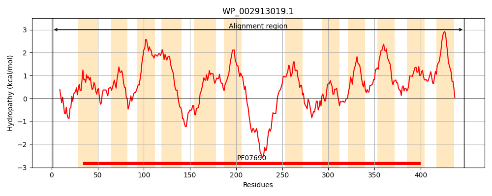
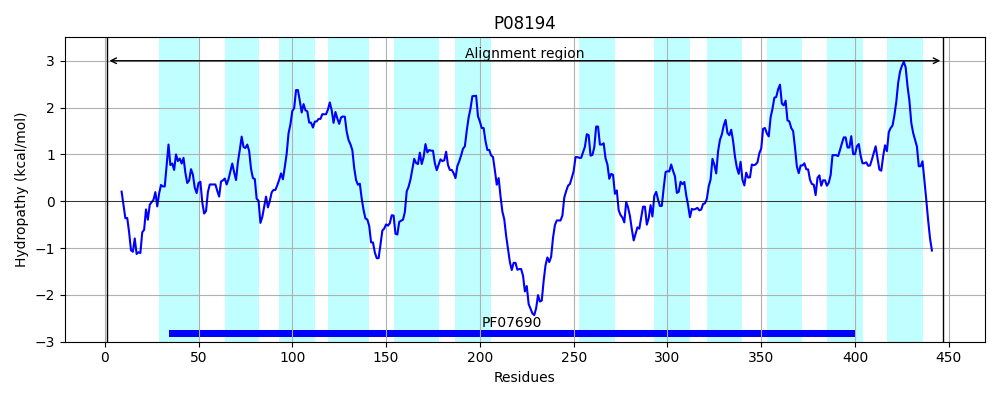
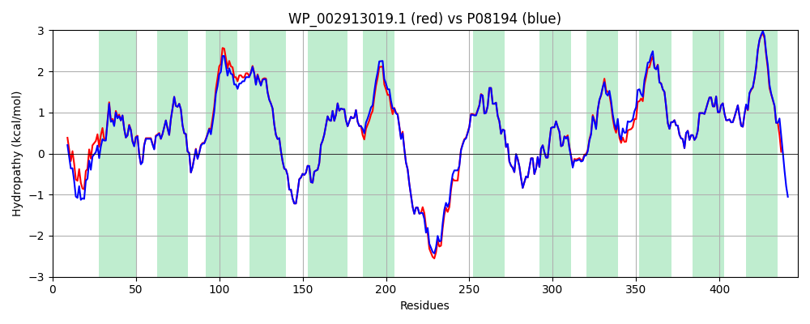

Hit Accession: P08194
Hit TCID: 2.A.1.4.3
Hit Description: gnl|BL_ORD_ID|8454 gnl|TC-DB|P08194|2.A.1.4.3 Glycerol-3-phosphate transporter (G-3-P transporter) (G-3-P permease) - Escherichia coli.
Mach Len: 447
e:0.000000
Query TMS Count : 12
Hit TMS Count: 12
TMS-Overlap Score: 12.500000
Predicted Substrates:CHEBI:14336;glycerol 1-phosphate
BLAST Alignment:
Score: 2279 , Bit scores: 882 bits, E-value: 0.0e+00, Alignment length: 447, Percentage identity: 93
Query: 1 MLSIFKPAAHKARLPAAEIDPLYRRLRWQIFIGIFFGYAAYYLVRKNFALAMPYLIEQGFSRGDLGFALSGISIAYGFSKFIMGSVSDRSNPRIFLPAGLILAALVMLVMGFVPWATSSIMIMFVLLFLCGWFQGMGWPPCGRTMVHWWSQKERGGIVSVWNCAHNVGGGIPPLLFLLGMAWFNDWHAALYMPAFGAILLAIFAFAMMRDTPQSCGLPPIEEYKNDYPDDYSEKHEEELTAKQIFMQYILPNKLLWYIAIANVFVYLLRYGILDWSPTYLKEVKHFALDKSSWAYFLYEYAGIPGTLLCGWMSDKVFKGNRGATGVFFMTLVTIATVVYWLNPPGNPGVDMACMIIIGFLIYGPVMLIGLHALELAPKKAAGTAAGFTGLFGYLGGSVAASAIVGYTVDFFGWDGGFMVMIGGSVLAVILLVIVMLGERRHHQQLKQ 447
MLSIFKPA HKARLPAAEIDP YRRLRWQIF+GIFFGYAAYYLVRKNFALAMPYL+EQGFSRGDLGFALSGISIAYGFSKFIMGSVSDRSNPR+FLPAGLILAA VML MGFVPWATSSI +MFVLLFLCGWFQGMGWPPCGRTMVHWWSQKERGGIVSVWNCAHNVGGGIPPLLFLLGMAWFNDWHAALYMPAF AIL+A+FAFAMMRDTPQSCGLPPIEEYKNDYPDDY+EK E+ELTAKQIFMQY+LPNKLLWYIAIANVFVYLLRYGILDWSPTYLKEVKHFALDKSSWAYFLYEYAGIPGTLLCGWMSDKVF+GNRGATGVFFMTLVTIAT+VYW+NP GNP VDM CMI+IGFLIYGPVMLIGLHALELAPKKAAGTAAGFTGLFGYLGGSVAASAIVGYTVDFFGWDGGFMVMIGGS+LAVILL++VM+GE+R H+QL Q
Sbjct: 1 MLSIFKPAPHKARLPAAEIDPTYRRLRWQIFLGIFFGYAAYYLVRKNFALAMPYLVEQGFSRGDLGFALSGISIAYGFSKFIMGSVSDRSNPRVFLPAGLILAAAVMLFMGFVPWATSSIAVMFVLLFLCGWFQGMGWPPCGRTMVHWWSQKERGGIVSVWNCAHNVGGGIPPLLFLLGMAWFNDWHAALYMPAFCAILVALFAFAMMRDTPQSCGLPPIEEYKNDYPDDYNEKAEQELTAKQIFMQYVLPNKLLWYIAIANVFVYLLRYGILDWSPTYLKEVKHFALDKSSWAYFLYEYAGIPGTLLCGWMSDKVFRGNRGATGVFFMTLVTIATIVYWMNPAGNPTVDMICMIVIGFLIYGPVMLIGLHALELAPKKAAGTAAGFTGLFGYLGGSVAASAIVGYTVDFFGWDGGFMVMIGGSILAVILLIVVMIGEKRRHEQLLQ 447 | Protein Hydropathy Plots: |
|---|
|  |  |
Pairwise Alignment-Hydropathy Plot:
|
|---|
|  |